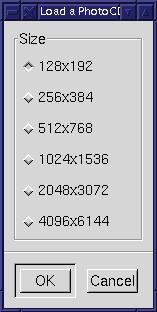

muse:
- v; to become absorbed in thought
- n; [ fr. Any of the nine sister goddesses of learning and the arts in Greek Mythology ]: a source of inspiration
|
muse:
|
 |
|
This month marks the second anniversary for the Graphics Muse column. Its hard for me to believe I've been doing this for that long. My general span of attention is about a year, but I've managed to not only hold onto an interest in this column, I've managed to grow it into several articles and covers for the Linux Journal, a book, and a web site devoted to computer graphics and based on this column. I guess when you get on a roll, stick with it.
The more observant readers will also notice a little change in format for this column. I finally did a little color matching for the various images I use and, at the bequest of more than just a few readers, got rid of the multicolumn articles. Most of the announcements are on a page of their own now, although I will be keeping a few on the first page. Overall, I much prefer this new format. It just looks cleaner. I hope you like the changes.
In this months column I've taken a chance and offered a little editorial on the way things are as I see them. Much of what I've seen in the past few months revolving around Linux has been positive news - announced support from all 5 major database vendors (Oracle, IBM, CA, Sybase, and Informix), Intel and Netscape announcing investment in Red Hat, and lots of generally good press. But along with this I've seen a fair amount of disunity among the community. There are camps forming between followers of various leaders. I find this sad. Hardlines drawn by groups with disparate interests and ideas tends to drain the energies of both sides of the argument and I'd really hate to see that happen with Linux. The worst aspect of these arguments is the distraction thats created from the real focus - proving how Open Source/free software can really be viable solutions to end users, not just developers. Thats key to making Linux a world player in corporations, education, government and on the desktop.
In this months column you'll find:

Dirk Hondel has put a new version of XFCom_Matrox on the ftp site and updated the web site at http://www.suse.de/XSuSE/XSuSE_E.html. The new server should work on all current Matrox boards, including the
Please report any problems with these servers to x@suse.de |
The Matrox Meteor is a high end professional quality video capture board commonly used in demanding video capture applications such as laboratory research, robotics, and industrial inspection. It's video quality and clarity of it's captures are generally notably superior to the garden variety consumer grade image capture devices, and it's price reflects this.
This driver is bundled with single frame capture software, software for displaying real time video in a window, patches to make the meteor work with "vic", a Linux video conferencing package, and other goodies. The "official page" for this package is found at http://www.rwii.com/linux/. Other information about this driver can be found at http://www.cs.virginia.edu/~bah6f/matrox/.
Like the numbering scheme
for the Linux kernel itself, the odd middle numeral in the version number
("5") indicates that this is a "development" release. It however
contains numerous enhancements over the last "stable" release, not the
least of which are the ability to compile without hacking on the latest
development and stable linux kernel versions, as well as the ability to
compile and run properly on libc6 based distributions. In actuality,
this "development" version should prove to be pretty much as stable as
the last "stable" release.
The URL is http://crystal.linuxgames.com
Crystal Space is a free (LGPL)
3D engine written in C++. It supports colored lights, mipmapping, mirrors,
reflecting surfaces, 3D models/sprites, scripting, and other features.
The purpose is to make a free and flexible 3D/game engine. Crystal
Space is also a rather large open source project. There are currently about
182 people subscribed to the developers mailing list. You can join to!
Bob Hepple
mailto:bhepple@bit.net.au
http://www.finder.com.au
DC20Pack
is a Software Package for Kodak DC20 and DC25 digital cameras which contains
two programs: dc20term and dc2totga.
dc20term transfers the pictures out of the camera and stores they as raw
data files. dc2totga converts those raw data files to standard image
files using the popular TGA image file format.
URLs:
ftp://sunsite.unc.edu/pub/Linux/apps/graphics/capture/dc20pack-1.0.tgz
http://home.t-online.de/home/Oliver.Hartmann
The following note was posted to the GIMP Developers mailing list on October 19th, 1998:
I'm writing from Australian Personal Computer magazine and would like to congratulate your having won an Award at our annual IT Awards evening last Thursday.The official award announcement can be found at http://newswire.com.au/9810/award.htm.We have a beautiful crystal trophy we would like to send you having won in the Productivity Software of 1998 category. Please can you forward me your street address and phone number as I would like to send this by courier to you.
Regards
Helen Duncan
New Media Projects Manager
Australian Personal Computer
The award is being shipped
to Peter Mattis who will be placing the trophy in the lobby of the XCF
(Experimental Computing Facility) at Berkeley, which is where the GIMP
has its origins. Congratulations to all those involved in the evolution
of the GIMP!
...For those of you who don't read GIMP News, Zach Beane has added a couple new tutorials to http://www.xach.com/gimp/tutorials/....at a refresh rate of 60Hz or lower, you'll often detect an eyestrain-causing flicker on your screen. Flicker generally disappears at 72Hz; the Video Electronics Standards Association's (VESA's) recommended minimum for comfortable viewing is 75Hz. Whichever card you buy, in any price range, be sure that it and your monitor can synchronize to provide at least a 75Hz refresh rate at your highest preferred resolution and color depth.
From ComputerShopper.com's article "Performance on Display"...a poll is being run by lumis.com asking which platform you'd like to see Alias/Wavefront's Maya 3D product ported to. Go there and tell the world - we want graphics tools ported to Linux! Slashdot had reported this link and noted that MacOS was way out in front, but the Slashdot effect &tm; had already taken by the time I got there and Linux was in front once again....you can find collections of free fonts all over the Internet. Take a look at the following sites:
http://www.fountain.nu/fonts/free.html - TrueType only (PC format downloads is in small type)...another 3D modeller is under development, this one using C and Tcl/TK. This one is called Mops and has support for NURB curves and RIB export files. Take a look at The Mops Home Page.
http://www.signalgrau.com/eyesaw/html/main.htm - TrueType and Postscript Type 1 fonts (pfb)
http://www.rotodesign.com/fonts/fonts.html - Type 1, but sans most punctuation and some numbers
More sites can be found from Yahoo's listings: http://dir.yahoo.com/Arts/Design_Arts/Graphic_Design/Typography/Typefaces/...there are a couple of newsgroups being run off the POV-Ray web site for the discussion of POV-Ray, the 3D raytracing tool and the display of images. Take a look at news://news.povray.org/povray.binaries.images and news://news.povray.org/povray.general.
...a very good explanation of using matrix transformations with POV-Ray can be found at http://www.erols.com/vansickl/matrix.htm. Additionally, you can find some useful POV-Ray macros at http://www.erols.com/vansickl/macs.htm.
A: There is no smudge tool. It has been oft requested, but noone has written one. Some not quite the same alternatives: the blur tool, iwarp, or selecting a region a bit and applying a gaussian blur. Not the same, but alas...
Adrian LikinsQ: I want to place a block of text with evenly single-spaced lines using some arbitrary font onto my Gimp image. Rather than doing it line by line with the Text Tool, is there an easier way?
adrian@gimp.org
A: While the Ascii2Image is probably the nicest solution, there is another somewhat more obscure method. Using Cut and Paste into the text tool entry, the the text tool has no problems with newline characters - you can make multiple text lines directly from the text tool this way.
Seth BurgessQ: Is there any way to get gimp to use virtual memory instead of its swap file? I was working on some images where the gimp swap file was about 30mb. Just about any operation I do causes lots of disk activity. The machine I'm running this on has more than enough physical memory, but it is not being used.
sjburges@gimp.org
A: Change the value for the gimp tile cahce in the Preferences dialog. I'd say with 160mb set it to at least 80megs or so.
Adrian LikinsQ: Ok now I'm new to linux and gimp - my friends got me into linux in the last couple months. How can I, in Gimp save a file without having to merge the layers and still have the graphic look the way its supposed to? Am I just really missing something here?
adrian@gimp.org
A: If you just want to save an "in-progress" verison of your image that preserves layers, guides, channels, selections,etc then you should be saving as .xcf. That's gimps native format.
If you want to "export" an image to a single layer format but not have to merge the layers, you should have a look at Simon Budig's export scripts that automate this task. These scripts can be found at:
'Muse Note: as you can see, Adrian and Seth offer some pretty good advice on the Gimp User's Mailing list!http://www.home.unix-ag.org/simon/gimp/export-file.htmlAdrian Likins
adrian@gimp.org
Hi Mr Hammel,'Muse: Woohoo! My favorite kind of reader mail. Ok. I'll stick around for a while longer.
Looking at the April 98 issue...Reader MailLove the column,
Nick Cali (Mktnc@aol.com) wrote:
Just want to drop a line thanking you for your effort at the Gazette and with Linux. Really, thanks a lot.Muse: You're quite welcome. I had gotten some rather harsh email from someone recently that had me considering dropping out of the Linux world altogether. Getting little notes like this, however, helps keep me going. Thanks!
Please stay,
'nuff said.:-)
angus@intasys.com
In a previous message, Rolf Magnus Nilsen says:
I'm really sorry for bothering you with this problem, but as an avid reader of the Linux Gazette and the Linux Journal I have read most of your writings there. And hope you can take the time to answer some questions.
'Muse:
No problem. I try to answer all the questions that come my way, if
I can.
Now, we are going to do a small project in VHS video, and we need some tools for video editing. The problem is, we cant find any tools besides the simplest command line tools.'Muse: Thats because there aren't any "canned" tools yet. See below.
So our current plan is to run a framegrabber, grab about 25 pictures a second, organise them, put in effects/text and use mpegencode to make a movie which we play back to our VCR. But this is quite a task, when you consider a movie of about 45 - 50 minutes.'Muse: Unfortunately this area of graphics tools on Linux is pretty sparse. Like you said, there are a number of command line tools for doing very specific tasks (like frame grabbers or creating MPEG video animations) but there aren't any user-friendly, GUI based tools like, for example, Adobe Premier.I have been searching around quite a bit, but have not found anything better than the tools I mentioned.
Do you know any resources or products I should have a look at. Buying a commercial product is OK if it runs under Linux..
That said, there is one project you might want to look into. The project is called Moxy (http://millennium.diads.com/moxy/). Not much information there yet, but its aim is to be a Premier-style application. Its in *very* early development.
You might also drop a line to the Gimp-Developer mailing list. A number of people had been discussing creating an application like this on that mailing list. I haven't heard whats become of this, however. Adding a plug-in to the Gimp wouldn't be the best way to handle video editing - the Gimp isn't designed for that type of work. But eventually interfaces should be (re: ought to be) developed that allow easy transfer between the Gimp and video editing tools.
No commercial packages that I know of are being ported yet. Desktop publishing on Linux is still somewhat limited to word processors and the Gimp, which lacks color management facilities that are quite important to most desktop publishing and video editing environments.
I'll post your message (actually this reply) to the next Graphics Muse column and perhaps someone with more information than I have will contact you. If you hear of any commercial packages being ported let me know. I'd love to start hearing of such ports!
BTW: I'm really looking forward to "The Artists' Guide to the GIMP", it is ordered already :-)'Muse: Hey! A sale! The first official one that I know of. I hope you find it useful!
In a previous message, Dylan The Hippy Wabbit says:
I have a particular interest in stereoscopic vision, and so I would like to have an X server that supports shutter glasses.'Muse: (Note - doesn't anyone go by their real names anymore?) Ouch. My eyes are hurting already just thinking about these. People (like me) who have one eye "stronger" than the other can't see these images, at least not very well. They give me a headache (so do 3D glasses).
In case you haven't heard of these, they use liquid crystals to alternately cover each eye. The display then alternates in phase so that each eye sees only one view. Apart from it's use in photography or molecular modelling it makes one hell of an extension to Quake!'Muse: No such beast is yet available. Its just not in high demand so you probably won't see it from the commercial vendors unless a paying business customer requests it (with some serious dollars behind the request). XFree86 will support it as soon as someone decides they want/need it and have the time/expertise to write the code for it. If the video cards handle it already then its just a matter of adding that support to an existing video card driver (assuming a standard, well known video chipset on the card). The problem is usually finding someone who knows how to do that. A post to comp.os.linux.x or maybe a letter to the Linux Gazette editor (gazette@linuxgazette.net) will put you in contact with someone. The LG editor will simply post your request in the next issue of the Gazette and, with luck, someone will contact you about their current work in this area. You might also try sending a letter to the XFree86 support address (its listed on their web site www.xfree86.org).Some, although only a few, 3D accelerators support them and there is an extensive web site including homebrewed controllers at:-
http://www.stereo3d.com/3dhome.htm
However, I can't find any mention of it in the XFree86 docs. The AcceleratedX web site mentions support for "3D PEX" which I assume is a typo, although it could be something genuine I've never heard of. I've searched the LG archive to find only your mention of a POVRAY "beamsplitter" in issue 27.
Do you know of anything? After all, we can't let DOS/Windows users have anything we can't get can we? ;-)
I'll post your message in the November Muse column. Maybe one of my readers will contact you about this. Keep your fingers crossed!
BTW, 3D PEX is not a typo.
PEX is the PHIGS Extension, a formal X Extension that supports PHIGS, which
is the Programmers Hierarchical Interactive Graphics System. Thats
a sort of OpenGL from the earlier days of computer graphics, although its
still in use today in a few places.

Normally I wouldn't consider using stock photos from Web-style CD collections because the quality of the photos generally isn't much better than what I can take myself. Additionally, most of those "25,000 (or more) Image" collections you find on the shelves come with images suitable only for the Web - generally no more than about 1024x768 resolution. These usually are far too small for any other media.
But an article in the September 1998 issue of Digital Video magazine covering stock image collections mentioned the Corel image collections, including their Super Ten Packs, as a source of quality stock images. Since I trust this magazine more than my own common sense (which is still rather new to the graphic arts world) and due to Corel's fairly full-blown support for Linux, I decided to check out one or two of these collections.
What is a Corel Super Ten Pack?
The Super Ten Packs are collections
of 10 CD's, each with 100 PhotoCD images on them. The current collections
are classified into a number of different categories:
| Aircraft | Food | Seasons |
| Animals | Gardens | Sports & Leisure |
| Architecture | Great Works of Art | Textures |
| Art, Sculpture, & Design | Landmarks | Textures II |
| Business & Industry | Museums & Artifacts | Textures & Patterns |
| Canada | Nature | Textures & Patterns II |
| Cars | People | Transportation |
| England | People II | Travel |
| Fashion | People III | Underwater |
There is also a Sampler Ten pack. The sampler set has CD's titled, among others, "War", "Alien Landscapes" and "Success". Unfortunately the limited documentation doesn't say from which other Ten Pack's these samples are taken. I expect that Corel will expand this list further as well, since they tend to produce a large number of stock photography CDs in general.
The images are royalty free but there are some restrictions to their use. First, you must display the following text somewhere in your publication:
This product/publication includes images from [insert full name of Corel product] which are protected by the copyright laws of the U.S., Canada and elsewhere. Used under license.Since I'm reviewing the CDs in general I hope the above counts towards my meeting this requirement. They also limit online display of the images to 512 X 768, but that may be only if you display the image unmodified. Its not clear about if such restrictions exist for derivative works that use the images.
How do you get them?
The Super Ten Packs are available at computer retail outlets or online. I purchased my two sets from MicroCenter here in Dallas. Corel's online site contains thumbnails of all the images from their huge collection of images so that you can preview them before purchase. All of the online versions have watermarks so don't get any ideas about trying to swipe them from their site (unless you like watermarked images).
Online ordering can be done at http://www.corel.com/products/clipartandphotos/photos/superten.htm. You can also search for individual images and order those online at http://corel.digitalriver.com/. I didn't check to see if you could actually order the photos individually or just in the sets that contain them but a reliable resource who has used the service in the past suggested you could purchase them individually.
When you go to http://corel.digitalriver.com/ just click on the Photo CD package image to get a list of titles. From there you can click on the individual CDs to preview all of the images on each CD. Each CD runs about $35-$45US.
What do you actually get?
I purchased two different sets, the Sampler Ten Pack and the Textures II Ten Pack. Both run a little higher at the retail outlet, as expected, and came in boxed sets. Inside the box I found the 10 CD's shrink wrapped along with a small pamphlet. The pamphlet had the obligatory licensing information along with full color thumnail images of all the images on each CD, one page per CD. This is quite useful and something I hadn't quite expected for some reason.
The images on the CD come in PhotoCD format. This format specifies 5 different image sizes:
128x192To read this format you have a couple of options. First, the Gimp has a PhotoCD file plug-in. You can tell if you have this plug-in installed if you try to open an existing file and the Open Options menu includes an entry for PCD. If you try to open a file from the CD by double clicking on the filename in the Load Image dialog then the plug-in is started and you get the dialog shown at left. You'll notice that this plug-in offers the additional resolution of 4096x6144. I'm not certain if this is a valid PhotoCD resolution or not, but it didn't seem to matter. Unfortunately, I was unable to read any of the images from the CD in resolutions higher than 512x768 using this plug-in. I had to switch to an alternative option, the hpcdtoppm tool from NetPBM package. With this program I could read the higher resolutions - up to 2048x3072 - into a PPM formatted file which I could then load into the Gimp. I didn't have time to determine if the problem was with the Gimp plug-in or the CDs, but I suspect the plug-in is at fault since I could read the higher resolutions with hpcdtoppm. Note that this plug-in works fine for resolutions up to 512x768.
256x384
512x768
1024x1536
2048x3072
 |
|
RMS vs. Raymond vs Users
Both RMS (Richard M. Stallman) and Eric Raymond have done wonders for the community and both should be applauded for their efforts and dedication. However their spirited enthusiasm, in the manner and form which they display in public, is not necessarily what we need now. Linux and free software/Open Software is a community, one that has grown beyond its bare communal spirit and now encompasses a metropolitan mix of individuals and groups. And that mix includes a high number of end users - not developers, not hackers - users. I wonder now if either RMS or Raymond is truly interested in the end user or is their focus solely on the developers needs. At this point, the community needs to focus on both.Commercial vs. Free and World Domination
Unlike many Linux fans, I have no problem with commercial (re: proprietary) software. There are people who both need and desire commercial software, regardless of what developers might find as the higher moral ground. I personally will use the tools which best suit my needs. I have always wanted a Unix desktop, ever since my days working on the Dell Unix products in the early 1990's and Linux is it for me. If commercial applications begin to show up that work well for me, I will use them. I already use Applixware and commercial versions of the sound drivers and X server. You don't have to encourage commercial development, but you shouldn't attack them either. Having a different point of view does not make someone wrong or generally evil in all cases. If you provide alternatives to commercial products you'll find many people who will both use and support those alternatives. But to disuade others from using commercial products without first providing the alternative is tantamount to using the same tactics Microsoft uses with their vaporware announcements. Convince by doing first. It makes the counter argument, the argument for commercial or proprietary software, more difficult to sustain.Vi vs. EmacsOn a related subject: World Domination by Linux is not a goal I seek. The first reason is obvious - if you displace Microsoft you lose the strongest focal point that currently exists for the free software movement - the drive to displace Microsoft. It is a bit of a catch-22 scenario, but I'd rather have Microsoft stay strong to keep developers on edge in the Linux community. They seem to thrive on that. Without real leadership in our community (and I'm not convinced we have that one strong individual or group that can claim that leadership role) it is imperitive that the strong focal point be kept clear. Focus is key in any project, be it writing software or climbing mountains or writing columns like this one.
The other reason I don't want world domination is I really don't want to replace one egotistical maniac with several thousand (or million). Great developers are egotistical - its a form of self confidence not unlike that displayed by great artists. But I wouldn't want either in charge of my personal computing world. They see the world from their perspective and that perspective can be clouded by their own intellect. It can be difficult to see the frustration of others when their problems may seem trivial to you and easily solved. Instead, I'd rather have the ability to control my own computing environment by having the opportunity to choose between multiple solutions to similar problems. I'd love to see the Mac and BeOS expand their market share because, in the end, it only opens up my vistas of choice. And thats what Linux is really about for end users. Freedom of choice.
Vi, of course. Unless I have to write a book or article for non-Linux publishers. Then ApplixWords.Red Hat or Debian or S.u.S.E?
Depends on what you want and where you live mostly. All three produce decent distributions. I tend to think of Debian as aimed more towards the technical crowd while the other two are more amenable to the average Joe. I use Red Hat 4.2. Why? Because 2 years ago when I was ready to upgrade from my Slackware distribution I went into SoftPro Books in Denver and found Red Hat abundantly stocked. S.u.S.E wasn't there yet. Neither was Debian. It was a simple choice back then, really. But like Linux in general, the good news is that I have choices. Thats important. I'll be upgrading again at the start of the year, probably in February. By that time most of the kinks with dealing with libc/glibc should be worked out from the installation point of view. I may go with Red Hat 5.2 if its out by then. But S.u.S.E sure has had a lot of good press too. But it probably doesn't matter that much. I don't even use RPM's on my machine except during an initial installation. After that, I install free software from source and commercial packages from CDs (in whatever form they come in).GPL, LGPL, NPL, or Artistic License
See what I mean? Choice. This sort of thing seldom crops up in the Microsoft world. Which is best? I won't say. Of all the arguments that have arisen repeatedly the past 2 years, this one is most certainly one of personal choice. I will recommend, however, that if you consider releasing software to the free/Open community that you read through each of these and try to understand them before releasing and before creating your own license. I did the latter. It was a bad choice.Where to go from here - Desktop Graphics
GPL: http://www.gnu.org/copyleft/gpl.html
LGPL: http://www.gnu.org/copyleft/lgpl.html
NPL: http://www.mozilla.org/NPL/
Artistic: http://language.perl.com/misc/Artistic.html
Ok, I've blabbered on for too long with my own opinions that really have nothing to do with graphics on Linux. I need to focus. What do we have now and what do we need? How do we get it? And who are "we"?'
We are the people who desire the tools to do the graphics arts work from which we both find enjoyment and make our livings. As of now, the tools for Linux are mostly geared toward Web development, a medium born from the same family as the images we create. Most of the tools are command line driven, with a few GUI-based tools like the Gimp or perhaps ImageMagick. But we lack certain features to go beyond Web images. We lack any real form of color management in the Gimp needed for prepress operations. We have 3D modellers but are they sufficient for commercial animation work? And what about video editing tools? Nothing exists at this point beyond one project in a very early stage. We have some hardware acceleration for 3D video chipsets but lack consistant support from vendors. Most important, we need a desktop that makes porting of applications - or writing new ones - inviting to those who need to interact with other tools.
There are plenty of tools available for commercial artists and effects houses that already exist on other Unix platforms. What would it take to make those people want to migrate to Linux? Vendors are fond of saying that end user demand is what drives ports to new platforms. We need to know if the demand exists and if not, then why not. I've spoken to two effects houses in the past who use Linux in rendering farms (groups of Linux servers number crunching 3D images with little to no user interaction). Linux as a server once more. Is Linux not appropriate as the front end of the special effects development process? What about for Desktop Publishing? All you Quark and Adobe users - what do we need? Would you use the ports if they were made available?
I write this column out of a desire to learn about computer graphics. The only graphics tools I'd ever used before moving to Linux were MacDraw and MicroGrafix under DOS many years ago. I'm not familiar with the Adobe series of graphics programs, nor Quark Express, nor the SoftImage tools or other SGI-based applications. I need feedback from users of these tools to know what to pass on to the rest of my readership. There are likely to be a few who would be willing to work on projects, if they new what needed to be done. And grass roots efforts by end users to convince commercial vendors that ports of existing applications to Linux would be worth their effort are also needed. Corel appears to be porting all their applications to Linux. I assume this means Corel Draw will be coming out sometime in the next 6 months. At least then I can see what a commercial application looks like. If I could only get my hands on Adobe Premier or Quark Express for Linux.....
Most important of all, I need to know what the readers need - desktop tools for the small prepress environment? Web tools? High end graphics tools for research and the entertainment industries? Perhaps multimedia authoring tools? Or just simple tools for doing common tasks at home, those that are readily available for the Mac and MS platforms and cost a buck and a quarter at the local computer retail outlet.
Graphics on Linux needs focus. We have the kernel supporters and the desktop supporters who have driven the server side of Linux to the point that the rest of the world is not only aware of Linux but enthusiastic about joining the community. Now we need the graphics folks to mobilize and show that we can go beyond the realm of back room servers.
Or can we?
[ More
Musings ]

| Online Magazines
and News sources
C|Net Tech News Linux Weekly News Slashdot.org General Web Sites
Some of the Mailing Lists
and Newsgroups I keep an eye on and where I get much of the information
in this column
|
 |
Let
me know what you'd like to hear about!
Graphics Muse #1, November 1996
Graphics Muse #2, December 1996
Graphics Muse #3, January 1997
Graphics Muse #4, February 1997
Graphics Muse #5, March 1997
Graphics Muse #6, April 1997
Graphics Muse #7, May 1997
Graphics Muse #8, June 1997
Graphics Muse #9, July 1997
Graphics Muse #10, August 1997
Graphics Muse #11, October 1997
Graphics Muse #12, December 1997
Graphics Muse #13, February 1998
Graphics Muse #14, March 1998
Graphics Muse #15, April 1998
Graphics Muse #16, August 1998
Graphics Muse #17, September 1998
Graphics Muse #18, October 1998
![[ TABLE OF CONTENTS ]](../gx/indexnew.gif)
![[ FRONT PAGE ]](../gx/homenew.gif)